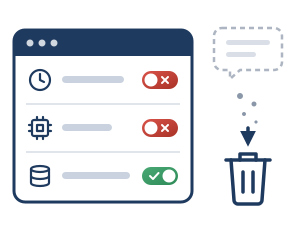

Configurazione sicura dei prompt · 2 di 3

Impostazioni centralizzate: a fine sessione la conversazione sparisce
Inquadramento normativo
- D.M. 166/2025, par. 3.2 e 3.3: configurazioni che «impediscano la conservazione dei prompt, la profilazione o il tracciamento degli studenti», disattivando le funzionalità non necessarie.
- GDPR, art. 4, n. 4; art. 22, par. 1; Cons. 71 e 75: tutela rafforzata dei minori contro i trattamenti automatizzati che analizzano o prevedono aspetti personali.
- AI Act, art. 50, par. 3 e Cons. 56: trasparenza e prevenzione delle profilazioni abusive nell’istruzione.
Esempio: mappe concettuali di storia
Licenza educational di una piattaforma di IA
Dirigente e Animatore Digitale impostano a livello centrale, nella console di amministrazione e nel contratto con il fornitore (art. 28 GDPR):
- Zero Data Retention: nessuna conservazione dei dati di sessione.
- Cronologia e addestramento dei modelli disattivati.
Alla chiusura del browser la conversazione è cancellata dai server: nessuno storico dei prompt, nessun profilo di lacune o interessi dell’alunno.